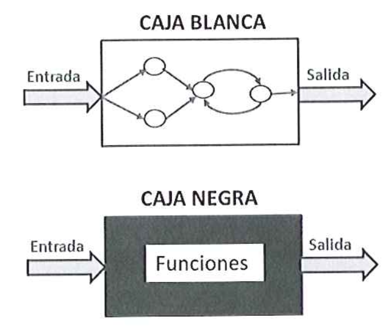

Las pruebas son necesarias en la fabricación de cualquier producto industrial y, análogamente, en el desarrollo de proyectos informáticos. ¿Quién pondría a la venta una aspiradora sin estar seguro de que aspira correctamente? ¿O una radio digital sin haber comprobado que pueda sintonizar los canales?
Una aplicación informática no puede llegar a manos de un usuario final con errores, y menos si éstos son suficientemente visibles y claros como para haber sido detectados por los desarrolladores. Se daría una situación de falta de profesionalidad y disminuiría la confianza por parte de los usuarios, que podría mermar oportunidades futuras.
¿Cuándo es necesario llevar a cabo las pruebas? ¿Qué es necesario probar? Todas las fases establecidas en el desarrollo del software son importantes. La falta o mala ejecución de alguna de ellas puede provocar que el resto del proyecto arrastre uno o varios errores que serán determinantes para su éxito. Cuanto antes se detecte un error, menos costoso será solucionarlo.
También serán muy importantes las pruebas que se llevarán a cabo una vez finalizado el proyecto. Es por ello que la fase de pruebas del desarrollo de un proyecto de software se considera básica antes de realizar la transferencia del proyecto al usuario final. ¿Quién daría un coche por construido y finalizado si al intentar arrancarlo no funcionara?
Es posible desarrollar varios tipos de pruebas del sistema, como pruebas funcionales, de usabilidad, de seguridad y de navegación.
Puesto que el proceso de prueba puede ser repetitivo y laborioso, es posible automatizar algunos procesos de forma que los procedimientos de prueba se puedan realizar con la ayuda de software. Este software debe ser preparado y recibe el nombre de componentes de prueba. Su utilización es muy frecuente en las pruebas de integración.
Existen diferentes tipos de pruebas que se realizan en el sistema. Según el momento de realización, existen las descritas en la siguiente tabla:
Tabla: Descripción de los tipos de prueba del software.
| Tipos de pruebas | Fases de realización | Descripción |
|---|---|---|
| Unitarias | Durante la construcción del sistema | Prueban el diseño y el comportamiento de cada uno de los componentes del sistema una vez construidos. |
| Integración | Durante la construcción del sistema | Comprueban la correcta unión de los componentes entre sí a través de sus interfaces, y si cumplen con la funcionalidad establecida. |
| Sistema | Después de la construcción del sistema | Prueban a fondo el sistema, comprobando su funcionalidad e integridad globalmente, en un entorno lo más parecido posible al entorno final de producción. |
| Implantación | Durante la implantación en el entorno de producción | Comprueba el correcto funcionamiento del sistema dentro del entorno real de producción. |
| Validación | Después de la implantación en el entorno de producción | Verifican que el sistema cumple con todos los requisitos indicados y permite que los usuarios del sistema den el visto bueno definitivo. |
| Regresión | Después de realizar modificaciones al sistema | El objetivo es comprobar que los cambios sobre un componente del sistema, no generan errores adicionales en otros componentes no modificados. |
Es posible clasificar las pruebas unitarias en dos grandes grupos:
La siguiente imagen describe de manerá simbólica qué persiguen estos dos tipos de prueba: 
Por otro lado, dependiendo del proceso de realización, las pruebas pueden ser manuales o automáticas: